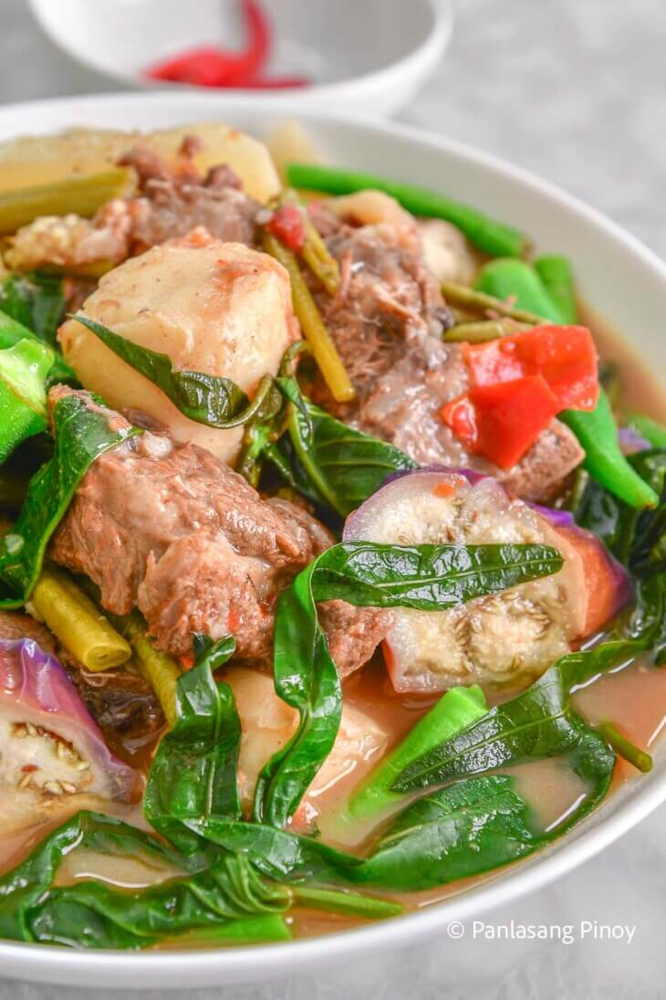

Home
Sinigang na Baka

Ingredients for Sinigang na Baka
Here’s what you’ll need, and why each ingredient matters:
- 4 lbs beef neck bones: These create a rich, meaty broth and give the soup deep flavor. The meat also becomes tender after slow cooking.
- 50 grams tamarind soup mix (Maggi Magic Sinigang): This gives the soup its signature sour flavor with just the right amount of tang.
- 15 green beans, cut into 2 inch pieces: These add color and crunch, and they hold up well in the broth.
- 5 taro roots, peeled: Taro helps thicken the soup slightly and turns soft and creamy as it cooks.
- 2 Chinese eggplants, sliced diagonally: Eggplant becomes tender and absorbs the flavor of the broth nicely.
- 3 long green peppers: These add aroma and just a touch of heat that enhances the overall flavor.
- 10 pieces okra: Okra adds a slightly earthy note and contributes to the thickness of the soup.
- 1 white radish (daikon): This adds a mild sweetness and balances out the sourness of the broth.
- 4 plum tomatoes, wedged: Tomatoes boost the savory and slightly tangy taste of the broth.
- 3 cloves garlic, minced: Garlic lays down the base flavor and brings a warm aroma to the soup.
- 3 onions, wedged: Onions give a subtle sweetness and add depth to the broth.
- 1 quart rice water: This adds body to the broth and is a traditional base for many Filipino soups.
- 1 quart water: Helps adjust the volume of the soup as it simmers.
- 1 bunch water spinach: These cook quickly and bring a fresh, slightly earthy flavor to the finished dish.
- 1 tablespoon beef powder: Enhances the overall flavor of the soup and gives it a savory boost.
- Fish sauce: Used for seasoning. It adds salt and depth to the broth.
How to Cook Sinigang na Baka
Let’s break this down into six easy steps:
- Sauté the aromatics – In a large pot, heat some oil and sauté the garlic, onions, and half of the tomatoes. Cook until the onions soften. This is your flavor base.
- Brown the beef – Add the beef neck bones and cook until the outer part starts to brown. This step helps bring out the beef flavor early.
- Simmer with rice water – Pour in the rice water and bring it to a boil. Once boiling, lower the heat and let it simmer until the meat becomes very tender. Skim off any foam or impurities from the top.
- Add the souring mix and root vegetables – Stir in the tamarind soup mix and beef powder. Add the taro and white radish. Let everything cook until the taro is soft.
- Add more vegetables – Add the rest of the tomatoes, the eggplant, and the green peppers. Let this cook for about 5 minutes. Then add the okra and green beans and simmer for another 5 minutes.
- Season and finish with leafy greens – Season the broth with fish sauce. Add the water spinach leaves last, letting them wilt for about a minute. Serve hot with steamed white rice.